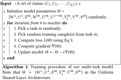

This is a web copy of https://doi.org/10.1145/3184558.3188729 originally published by ACM Press, redistributed under the terms of Creative Commons Attribution 4.0 (CC BY 4.0). The modifications from the original are solely to improve HTML aiming to make it Findable, Accessible, Interoperable and Reusable. augmenting HTML metadata and avoiding ACM trademark. To reference this HTML version, use:
Permalink: https://w3id.org/oa/10.1145/3184558.3188729
DOI: https://doi.org/10.1145/3184558.3188729
WWW '18: Proceedings of The Web Conference 2018, Lyon,
France, April 2018
In recent years, an unhealthy phenomenon characterized as the massive spread of fake news or unverified information (i.e., rumors) has become increasingly a daunting issue in human society. The rumors commonly originate from social media outlets, primarily microblogging platforms, being viral afterwards by the wild, willful propagation via a large number of participants. It is observed that rumorous posts often trigger versatile, mostly controversial stances among participating users. Thus, determining the stances on the posts in question can be pertinent to the successful detection of rumors, and vice versa. Existing studies, however, mainly regard rumor detection and stance classification as separate tasks. In this paper, we argue that they should be treated as a joint, collaborative effort, considering the strong connections between the veracity of claim and the stances expressed in responsive posts.
Enlightened by the multi-task learning scheme, we propose a joint framework that unifies the two highly pertinent tasks, i.e., rumor detection and stance classification. Based on deep neural networks, we train both tasks jointly using weight sharing to extract the common and task-invariant features while each task can still learn its task-specific features. Extensive experiments on real-world datasets gathered from Twitter and news portals demonstrate that our proposed framework improves both rumor detection and stance classification tasks consistently with the help of the strong inter-task connections, achieving much better performance than state-of-the-art methods.
CCS Concepts: • Computing methodologies → Artificial intelligence; Natural language processing; Multi-task learning; • Applied computing → Document analysis;
ACM Reference
Format:
Jing Ma, Wei Gao, and Kam-Fai Wong. 2018. Detect Rumor
and Stance Jointly by Neural Multi-task Learning. In
WWW '18 Companion: The 2018 Web Conference
Companion, April 23–27, 2018, Lyon,
France. ACM, New York, NY, USA 9 Pages. https://doi.org/10.1145/3184558.3188729
The popularity of microblogging websites makes them important for information dissemination and sharing. Hundreds of millions of users could spontaneously post messages on microblogs to release latest news or share their opinions about various information everyday. Without accurate systematic effort to moderate the posts, large volumes of fake or unverified information can emerge and spread for various motivations, like conducting social advertising, political astroturfing, etc. For instance, during the 2016 US election, massive fake news spread on social media such as Facebook and Twitter, which has led to real-world political repercussions1.
The massive spread of rumors could seriously hurt the user experience and hinder the healthy development of microblogging systems. It is observed however that skeptical and opposing voices against rumors always arise along with their propagation, serving as helpful indicators that signal the truthfulness of information. Thus, identifying rumors as well as analyzing various stances on the concerned information are meaningful and beneficial for giving early precautions on rumor's diffusion in order to minimize its negative influence. Nevertheless, both rumor detection and stance classification are challenging tasks due to the ever-increasing volumes of microblog data and the complex nature of controversies.
Rumor detection aims to determine the veracity of a given claim about some subject matter. Traditional approaches either used supervised machine learning algorithms that incorporate a wide variety of features manually crafted from post content, user profiles, and diffusion patterns of the posts [6, 24, 28, 33, 45], or exploited rules or regular expressions to discover unusual patterns from tweets [47]. To alleviate the heavy manual effort in these methods, models without feature engineering were proposed more recently and had achieved promising results for the task, e.g., purely data-driven models using recurrent neural networks [32, 40] and a tree-kernel-based model capturing high-order propagation structures [34].
Stance detection aims to determine the different attitudes expressed in a text towards a specific target. Several supervised models were developed for the task based on feature engineering approach [1, 38, 41, 46]. Lukasik et al. [29], ,30] dealt with rumor stance classification by considering both temporal and textual signals via continuous time sequence classification using Hawkes processes. More recently, Zubiaga et al. [48] exploited the conversational structure among microblog texts for classifying tweet stance. Another line of work mainly focus on using deep learning models, such as recurrent or convolutional neural networks [3, 43] for stance feature learning and classification.
Previous analyses also indicate that false rumors tend to provoke tremendous controversies than normal news report [35, 49], in which denying and questioning stances were found playing crucial role in signaling claims as being rumors. It is noticed that several studies on rumor detection have taken into account such kind of stance-bearing signals in their models [28, 38, 47]. In this paper, we argue that such approach exploiting stance information for aiding rumor detection is narrow and suboptimal, which can be radically revolutionized into a joint reinforcement approach for boosting the performance of both rumor detection and stance classification tasks in one shot. Our idea is motivated by the observation that people's stances are closely correlated with the veracity of concerned information. We assume that there can be some positive mutual feedback established between the two tasks: the indicative stances towards a claim can be helpful for debunking the rumor while validating the veracity of the claim is in turn conducive to infer the stances of involved posts. Figure 1 illustrates the intuition using statistics based on a set of 100 real-world rumorous events randomly sampled from our datasets (see Section 6.1). It can be seen that users tend to express denying stance more often than supporting stance in false rumors than in true rumors, which can be used to indicate rumor types for rumor detection; on the other hand, given the type of rumor, the tweets about false rumors are more likely to hold denying than supporting stance, and conversely in the tweets about true rumors, suggesting that the stances in relevant tweets may be inferred based on rumor types.
Inspired by the success of multi-task learning [5, 26], we attempt to reinforce rumor detection and stance classification together via mutual feedback in a unified architecture. Different from existing models that regard the two tasks independent, in this paper we propose unified multi-task models that learn a set of common, bilaterally friendly features relevant to both of the tasks to facilitate their interaction while each task can also learn to strengthen their task-specific features via a mutual learning process. This is achieved by using multi-layer recurrent neural networks (RNN), where we employ a shared layer and a task-specific layer to accommodate different types of representations of the tasks and their corresponding parameters. Benefited from not only having more data (i.e., additionally from a relevant task) for training, the use of multi-task learning also reduces overfitting to each individual task. Thus, the learned representation can result in more compact models than those built from surface-form features on a single task. Experimental results show that the joint learning on the two rumor-related tasks together can improve the performance of each task significantly relative to learning them in separate.
Our contributions are of three folds:
In this section, we provide a brief review of the research related to ours in three main areas: rumor detection, stance classification, and multi-task learning.
Detecting rumors is an important research topic and has been studied in various disciplines [12, 37, 42]. Social psychology literature generally defined a rumor as “unverified and instrumentally relevant information statements in circulation” [14]. This unverified information may eventually turn out to be true, partly or entirely false, or remain unresolved [49]. Supervised classification was widely used to identify rumors in social media posts. The main concern of this approach is to define effective features for training rumor classifiers. Castillo et al. [6] provided a wide range of features crafted from the post contents, user profiles and propagation patterns. Subsequently, further studies [17, 19, 24, 33, 44] were conducted to detect rumors with several new temporal features for representing rumor diffusion.
Instead of defining complex feature sets, Zhao et al. [47] focused on early rumor detection by using regular expressions (such as “not true”, “unconfirmed” or “really?”, etc.) for finding questioning and denying tweets as the key for debunking rumors. More recently, Ma et al. [32] and Rath et al. [40] used RNN to learn automatically the representations of rumors and rumor spreaders from post content and user interactions at different times, respectively. Ma et al. [34] also proposed a tree-kernel-based method which captures high-order propagation patterns for differentiating various types of rumors on Twitter. In this work, we will learn better representations of rumors by leveraging feature learning capacity from two related tasks, which can be considered a two-task extension of the prior RNN-based rumor detection method [32].
Stance detection has gained increasing popularity in different research areas [9, 39]. One of the pioneering studies was reported by Mendoza et al. [35], which aims to understand the stances with respect to different type of rumors via non-automated manual analysis. They found that the vast majority of tweets related to true rumors hold supporting stance, whereas half of the tweets on false rumors are denied or questioned.
In automated methods, existing studies can be divided into two categories: The first category is to extract indicative features and then apply supervised learning techniques to classify the stances. Following Qazvinian et al. [38] who aimed to classify rumor-related tweets into supportive or not, a wide range of features were proposed in follow-up studies to improve the performance of stance classification [28, 46]. But these stance classifiers ignored the rumor identities and temporal dependencies. More recently, Lukasik et al. [29], ,30] exploited the temporal sequence to classify tweet stances in a sequence regarding a rumor using Gaussian Process and Hawkes Process. Zubiaga et al. [48] built a tree-CRF classifier that learns the dynamics of stance in tree-structured conversations such as Twitter replies, instead of classifying tweets in isolation. Unlike the traditional binary classification (i.e., support or denial), these recent research performed a finer-grained classification to encompass all different kinds of reactions to rumors which include supporting, denying, questioning and commenting (SDQC).
The second category is the models based on deep neural networks. Kochkina et al. [22] employed LSTM for sequential classification of tweet stances, where a bidirectional LSTM encoding approach was used to represent tweets relevant to the target [3]. Chen et al. [7] used convolutional neural networks (CNN) for obtaining the representation of each tweet, then assigned probabilities to different classes that the tweet may belong to by a softmax classifier. One drawback of the existing methods is that they only considered that a tweet is conditioned on the target, but ignored that the stances are also conditioned on the truthfulness of the target. This observation, as mentioned in [47], could potentially be leveraged to improve the model for stance classification.
The general idea of multi-task learning dates back to [5], which aims to improve the performance of a task using other related tasks. Most of multi-task learning or joint learning models can be regarded as parameter sharing approaches, where models are trained jointly and parameters or features are shared across multiple tasks [2]. There has been amount of research on multi-task learning in pipelined Natural Language Processing (NLP) tasks, such as word segmentation, POS tagging and dependency parsing [4, 20, 25], and more recently on text classification [26].
In the context of neural models for NLP, multi-task learning has been proven effective in many related problems. For example, Collobert and Weston [10] proposed an unified framework which uses a shared lookup table for input words, and then jointly trained several NLP tasks using convolutional neural networks such as part-of-speech tagging, semantic role labeling and named-entity recognition. Liu et al. [27] developed a multi-task deep neural network for learning shared representations for arbitrary text across multiple tasks, which combines query classification and ranking for web search. More recently, neural multi-task learning was applied to sequence-to-sequence problems with recurrent neural networks. Several multi-task encoder-decoder networks were proposed for neural machine translation [13, 16], which allows translating one source language to many target languages by making use of cross-lingual information. Luong et al. [31] utilized multi-task sequence-to-sequence models to study the ensemble of a wide range of tasks, e.g., syntactic parsing, machine translation, image caption, etc. Liu et al. [26] introduced three RNN-based architectures to model text sequence which provided different information sharing mechanisms for multiple text classification tasks. In most of these models, multi-task architectures basically share some lower layers across all tasks to determine common features, while the remaining layers are task specific. Our model is inspired from the general sharing structure for RNN-based multi-task learning [26]. Our main challenge lies in designing an effective shared weighting method to obtain better task-specific representations by enhancing the interaction between the rumor pertinent tasks.
Our goal is to formulate a multi-task model that jointly learns the rumor detection and stance classification models, where one task may or may not use data from the same source as the other. For instance, we can typically use tweets in rumor detection but use news reports in stance classification, considering the availability of training data and specific setting.
Since tweets are short in nature, containing very limited context, a claim is generally associated with a collection of posts that are relevant to it. Therefore, we model the Twitter data as a set of claims $\lbrace C_1,C_2,\cdots ,C_{|\mathcal {C}|}\rbrace$ , where each claim Ci = {(xij , tij )} is composed of a set of relevant tweets, and xij is a post posted at time tij .
Rumor detection: We formulate this task as a supervised sequence classification problem, which learns a classifier f from labeled claims where each claim Ci corresponds to an input sequence of its relevant posts $x_{i1}x_{i2}\ldots x_{iT_i}$ , that is, $f:x_{i1}x_{i2}\ldots x_{iT_i} \rightarrow Y_i$ , where Yi takes one of four possible class labels: Non-rumor, True rumor, False rumor and Unverified rumor (NTFU). If one is concerned about the truthfulness of individual post, the task can be turned into sequence-to-sequence problem. But since such setting is uncommon in rumor detection, we do not consider it here.
Stance Classification: This task refers to determine the type of orientation that each individual post or a document expresses towards the veracity of a claim. We formulate it as a sequence labeling or sequence classification problem depending on the specific type of input:
Compared to standalone learning models, multi-task learning approach can take advantage of the related tasks to learn complex signals indicative of fake information. By considering the inter-task correlations, the representations learned in one task can be shared and used to reinforce the feature learning of the other task, thus boosting the overall performance of both tasks via mutual feedback within a unified framework. For instance, a strong false rumor feature is most likely to be projected to the vicinity of a feature indicating denial or question in the shared representation space, whereas a feature indicating comment or time would be largely projected into the specific feature space of their own task.
Inspired by the RNN-based neural multi-task model [26], we present two deep architectures based on RNN with a shared layer. The first model contains only a single shared hidden layer and the second model is enhanced by considering additional task-specific hidden layers apart from the shared layer. Our model is different from [26] in that 1) we aim to deal with heterogeneous rumor-related tasks where input and output structures vary widely among the tasks while their model is focused on homogeneous, traditional text classification tasks; 2) our method learns to optimize separate objectives of different tasks instead of only a same objective; 3) we use Gated Recurrent Unit (GRU) [8] for representing hidden units rather than Long-Short Term Memory (LSTM) [21] for efficiency. The architectures of our models are shown in Figure 2.
In this model, the different tasks share a same hidden layer and each task has its own task-specific input and embeddings, which is shown as the Uniform Shared-Layer Architecture in Figure 2(a) .
For a task m, given a sequence of posts or sentences $\lbrace x^m_t\rbrace$ for an input claim, a straightforward strategy is to map each input unit $x^m_t$ at time step t to a fixed-sized vector using one RNN, for which we adopt GRU [8] as hidden representation. For each t, the GRU transition equations are the following:
For the sequence classification in rumor detection task, the output of the last time step hT can be straightforwardly associated with the representation of the entire post sequence. For stance classification task in particular, however, most previous research did not treat it as a sequence problem, especially for news data. Instead, it was typically modeled to classify a given headline-article (or claim-post) pair, which thus ignored the valuable contextual information among sentences (or posts) [3, 38, 46]. Here we aim to solve a sequence problem (i.e., either being sequence labeling or sequence classification depending on the form of input data (see Section 3)), and input a headline (or claim) at the first time step plus its corresponding sentences (or posts) sequence for the rest of the time steps in an RNN, provided that the pairwise similarities among the neighboring units can be leveraged to improve sequence labeling or classification performance (see Section 5 for detail).
The Uniform Shared-Layer Architecture fully shares all the GRU parameters of the hidden features extracted from the two tasks. So, the two tasks can capture and share the common patterns that are highly weighted. However, there is a shortcoming as it ignores the fact that some patterns should be more important in one task than in the other. For example, since rumor detection task needs to pay more attention on veracity-related information, patterns conveying semantics like “true” and “false” would be more important than patterns representing “believe” and “don't think” which are supposed more useful for stance classification task. In order to address the problem, we extend the model by adding an extra task-specific layer into the architecture for each task.
As shown in Figure 2(b), the Enhanced Shared-Layer Architecture adopts two hidden layers for each task: one is used to extract the common pattens via the shared parameters, and the other is used to capture task-specific features via the separate parameter sets. Accordingly, each task is assigned a shared GRU layer and a task-specific GRU layer, which hopefully can be used to capture the shared and local representations for different tasks.
Specifically, for a task m, the output of the shared layer at time step t is computed as $h_t^s=GRU(h^s_{t-1}, x^m_t)$ , where the function GRU(·) is a shorthand of Eq. 1. To enhance the interaction between the task-specific layers and the shared layer, we redefine Eq. 1 and let the hidden output at t be dependent on the hidden state from the shared layer $h^s_t$ , the previous hidden state from the task specific layer $h^m_{t-1}$ , and the current input $x^m_t$ . Therefore, the hidden state of the task-specific layer for task m can be computed as:
For an input sequence of a task, its task-specific representation, emitted by the enhanced architecture, can be ultimately fed into different output layers for prediction. For the uniform architecture, in contrast, the hidden state from the shared layer can be directly fed into the output layers due to the lack of task-specific layer.
In the rumor detection task, we mark its task index m = 1 and represent the whole post sequence of a claim using the hidden vector at the last time step $h^{m=1}_T$ . Accordingly, the final classification decision for the claim is formulated probabilistically as softmax:
In the stance classification task, we mark the index m = 2 and let $h^{m=2}_1$ and $\lbrace h^{m=2}_t\rbrace _{t=2}^T$ be the low-dimensional task-specific representations of the claim (or headline) which are placed at the first time step and the sequence of posts (or sentences) at the rest of time steps to be classified3, respectively. We then feed them into a fully connected layer with softmax activation functions to generate the prediction for each post (or an article4):

The parameters of the proposed multi-task model for each task are trained to minimize the cross-entropy of the predicted and ground truth distributions:
We train our model using stochastic gradient decent by looping over the tasks similarly as [10, 27]. The training procedure is shown in Algorithm 1, where in each iteration, a task is selected randomly, and the model is updated according to the task-specific objective. More specifically, 1) model parameters are empirically initialized with uniform distribution, and updated by employing the derivative of the loss through back-propagation [11]; 2) we use AdaGrad algorithm [15] to speed up the convergence. 3) we fix the vocabulary size as 5,000, the size of embedding and hidden units as 100. 4) we run Algorithm 1 until the loss value of each task converges or the maximum epoch number is met.
For rumor detection task, we made expansion based on a public Twitter dataset described in Liu et al. [28]. The original dataset were used for binary classification of claims into rumor and non-rumor given the relevant tweets of each claim. We finer granularized the ground-truth label set by using the four NTFU tags according to the veracity tagging adopted by the popular rumor debunking websites (e.g., Snopes.com, Emergent.info, etc)5. In addition, the fraction of different types of rumors are imbalanced in real world. As per our statistics based on Snopes.com since January 2015, the proportions of articles under the NTFU categories are as the following: 76.0% non-rumors, 16.5% false rumors, 3.4% true rumors and 4.1% unverified rumors. Accordingly, we enriched the dataset to conform to such class distribution by implementing the tweets gathering method described by Liu et al. [28]. Table 1(a) gives the statistics of this expanded dataset which is named as LIU+.
For stance classification task, we used the PHEME dataset [49] which contains 297 claims corresponding to eight breaking events, which provide tweet-level stance annotations. We followed the common practice of prior works [30, 48] that employed this dataset to convert the original labels into SDQC set based on a set of rules proposed in [30]. In this task, we also examined an additional dataset based on news articles released by the 2017 Fake News Challenge (FNC, www.fakenewschallenge.org), which aimed to classify the text in a news article body with respect to the content in its headline. There are four categories, into which the stance must be classified: agrees, disagrees, discusses and unrelated. We summarize the statistics of the two stance datasets in Table 1(b).
Owing to the imbalanced class prevalence, evaluation solely based on accuracy cannot arguably suffice to capture competitive performance beyond the majority class [48]. Therefore, we used both micro-averaged and macro-averaged F1 scores as evaluation metrics for both tasks. We hold out 10% of the instances in each dataset for model tuning, and for the rest of the instances, we perform 5-fold cross-validation throughout all experiments.
| (a) Rumor detection dataset | ||||
|---|---|---|---|---|
| LIU+ | N | T | F | U |
| Claim # | 2,280 | 99 | 498 | 123 |
| Proportion | 76.0% | 3.3% | 16.6% | 4.1% |
| posts # / Claim | 757 | 1,029 | 587 | 686 |
| Users # | 61,7374 | 6,5475 | 18,2459 | 5,5298 |
| (b) Stance classification dataset | ||||
| PHEME | Support | Deny | Question | Comment |
| Tweets # | 891 | 335 | 353 | 2,855 |
| Proportion | 20.09% | 7.56% | 7.96% | 64.39% |
| Users # | 732 | 295 | 318 | 2,036 |
| FNC | Agree | Disagree | Discuss | Unrelated |
| articles # | 5,581 | 1,537 | 13,373 | 54,894 |
| Proportion | 7.40% | 2.03% | 17.74% | 72.81% |
| Sentence # | 62,593 | 18,090 | 146,872 | 582,206 |
| Method | N | F | T | U | ||
|---|---|---|---|---|---|---|
| MicF1 | MacF1 | F 1 | F 1 | F 1 | F 1 | |
| DTR [47] | 0.734 | 0.338 | 0.856 | 0.349 | 0.071 | 0.076 |
| SVM-RBF [45] | 0.760 | 0.216 | 0.864 | 0.000 | 0.000 | 0.000 |
| DTC [6] | 0.793 | 0.357 | 0.883 | 0.528 | 0.018 | 0.000 |
| SVM-TS [33] | 0.786 | 0.361 | 0.879 | 0.506 | 0.037 | 0.014 |
| RFC [23] | 0.799 | 0.389 | 0.889 | 0.541 | 0.031 | 0.091 |
| MT-single [32] | 0.762 | 0.426 | 0.875 | 0.487 | 0.05 | 0.292 |
|
LIU+ & PHEME datasets
|
||||||
| MT-US | 0.761 | 0.431 | 0.872 | 0.513 | 0.089 | 0.292 |
| MT-ES | 0.783 | 0.464 | 0.876 | 0.534 | 0.114 | 0.333 |
|
LIU+ & FNC dataset
|
||||||
| MT-US | 0.752 | 0.439 | 0.858 | 0.545 | 0.105 | 0.323 |
| MT-ES | 0.778 | 0.443 | 0.872 | 0.503 | 0.074 | 0.324 |
Table 2 compares rumor detection results of the following systems:
DTR: A Decision-Tree-based Ranking method to identify trending rumors [47] by searching for enquiry phrases.
DTC and SVM-RBF: The Twitter information credibility model using Decision Tree Classifier [6] and the SVM-based model with RBF kernel [45], respectively, both using various handcrafted features based on the overall statistics of the posts.
RFC: The Random Forest Classifier using three parameters to fit the temporal properties and a set of handcrafted features on user, linguistic and structure characteristics [23].
SVM-TS: A linear SVM classification model that uses time-series to model the variation of a set of handcrafted features [33].
MT-US: Our multi-task model with the Uniform Shared-Layer Architecture.
MT-ES: Our multi-task model with the Enhanced Shared-Layer Architecture.
MT-single: Our MT-US model that removes the stance classification component. This reduces to an existing single-task rumor detection model based on RNN proposed in [32].
We implement DTC and RFC using Weka6, SVM-based models using LibSVM7 and neural-network-based models with Theano8.
We highlight that some baseline models above have exploited stance as features for rumor detection: DTR relies on the questioning or denying stances to debunk rumors; others like RFC and SVM-TS craft some features relative to individual opinions. So, they are reasonably compared with our proposed method here.
The benefit of using multi-task learning is obvious among all the baselines due to the improvement of Macro-F1 and F1 scores over most classes. Further, we have the following observations:
In the first glance, it appears that our method does not have advantage due to the lower Micro-F1 scores than many baselines. But when we look at specific classes, it is found that the baselines performing better in Micro-F1 (e.g., DTC, SVM-TS, RFC) are only better off on the majority class (i.e., non-rumors), but much worse off on all minority classes. This is also why our method achieves clearly higher Macro-F1 performance than all the baselines. This verifies that the proposed method is overall advantageous, especially on the three minority rumor types which are more difficult to classify, and can better deal with the imbalanced class prevalence in rumor detection.
SVM-TS and RFC appear to be better than other feature-based baselines because both of them utilize an extensive set of features especially focusing on temporal traits. But they are much worse than all the RNN-based models, which can learn advanced representations of responsive tweets by capturing the hidden non-linear correlations. This indicates the effectiveness of complex signals indicative of rumors beyond surface signals or shallow patterns typically exploited in the baseline models.
MT-US outperforms all the baselines including the models that have incorporated stance information as features. This is because the proposed multi-task framework cannot only learn the representation of rumor detection task itself effectively via a neural model, but also can strengthen the learned features by transferring some helpful representation from the task of stance detection. We can also see that MT-ES, as an extension of MT-US, yields the highest Macro-F1 score on both datasets, suggesting that the learned representation is more effective due to the introduction of task-specific representation layers in addition to the shared layer. Furthermore, the performance of our models on LIU+ & PHEME data is generally better than that on LIU+ & FNC. This is because PHEME data are also based on tweets and may share more common features with LIU+ dataset, such as specific symbols or writing styles.
|
(a) PHEME dataset (S: Support; D: Deny; Q:
Question; C: Comment)
|
||||||
|---|---|---|---|---|---|---|
| S | D | Q | C | |||
| Method | MicF1 | MacF1 | F 1 | F 1 | F 1 | F 1 |
| Majority Vote | 0.641 | 0.195 | 0.000 | 0.000 | 0.000 | 0.781 |
| NB [38] | 0.277 | 0.244 | 0.395 | 0.038 | 0.182 | 0.362 |
| DT [18] | 0.552 | 0.374 | 0.421 | 0.112 | 0.278 | 0.688 |
| BOW [36] | 0.652 | 0.344 | 0.273 | 0.108 | 0.206 | 0.790 |
| HP[30] | 0.650 | 0.390 | 0.519 | 0.079 | 0.394 | 0.771 |
| CNN [7] | 0.642 | 0.324 | 0.301 | 0.08 | 0.178 | 0.739 |
| BiGRU [3] | 0.605 | 0.373 | 0.299 | 0.158 | 0.286 | 0.751 |
| MT-single | 0.583 | 0.344 | 0.212 | 0.154 | 0.272 | 0.737 |
| MT-US | 0.635 | 0.400 | 0.355 | 0.116 | 0.337 | 0.776 |
| MT-ES | 0.622 | 0.430 | 0.314 | 0.158 | 0.531 | 0.739 |
|
(b) FNC dataset (A: Agree; N: Disagree; D:
Discuss; U: Unrelated)
|
||||||
| Method | A | N | D | U | ||
| MicF1 | MacF1 | F 1 | F 1 | F 1 | F 1 | |
| Majority Vote | 0.722 | 0.209 | 0.000 | 0.000 | 0.000 | 0.839 |
| NB [38] | 0.676 | 0.214 | 0.000 | 0.003 | 0.043 | 0.810 |
| DT [18] | 0.615 | 0.240 | 0.054 | 0.013 | 0.127 | 0.767 |
| BOW [36] | 0.724 | 0.214 | 0.010 | 0.000 | 0.000 | 0.847 |
| HP[30] | − | − | − | − | − | − |
| CNN [7] | 0.691 | 0.277 | 0.054 | 0.000 | 0.242 | 0.817 |
| BiGRU [3] | 0.571 | 0.305 | 0.178 | 0.025 | 0.297 | 0.718 |
| MT-single | 0.584 | 0.291 | 0.163 | 0.026 | 0.243 | 0.731 |
| MT-US | 0.604 | 0.310 | 0.094 | 0.103 | 0.298 | 0.741 |
| MT-ES | 0.609 | 0.328 | 0.219 | 0.096 | 0.251 | 0.744 |
Table 3 shows the results on stance classification by comparing the following systems:
Majority Vote: This method simply takes the class of majority in the training data to predict the stance in test data.
NB: A Naive Bayes classifier [38] that utilizes a set of hand-crafted features.
DT: A J48 decision tree classifier [18], which adopts an enriched set of features such as temporal information.
BOW: A SVM classifier using bag-of-words and N-grams (e.g., 1-gram, bi-gram and tri-gram) features as reported in [36].
HP: The state-of-the-art approach proposed by [30] that classifies stance by using Hawkes process and exploits both temporal and textual information.
CNN: A convolutional neural model proposed in [7] for obtaining the representation of each tweet and classifying tweet stances with a softmax layer.
BiGRU: A bidirectional RNN-based tweet stance model [3] which considered the bidirectional contexts between target and tweet. We replaced the original LSTM units with GRU for fair comparison.
MT-single: Our MT-US model that removes the rumor detection component, as a strong baseline for comparison between single-task model and multi-task model.
MT-US and MT-ES: Our multi-task models with the Uniform Shared-Layer and Enhanced Shared-Layer Architecture.
The superiority of the multi-task proposals is clear as MT-US and MT-ES yield much better results than all baselines in terms of Macro-F1 scores and F1 scores of most classes.
It is observed that the Micro-F1 for Majority Vote is very high. This is unsurprising due to the very imbalanced class prevalences: the majority of the instances fall into “comment” (or “unrelated”) class. It has been similarly demonstrated by the lower Micro-F1 score of our models on rumor detection task (see Section 6.2).
For Macro-F1 scores, those feature-based methods like NB, DT and BOW perform obviously poorly because the feature engineering is generally biased and less effective, which is hard to generalize. HP outperforms other baselines because of its wider spectrum of information incorporated including post contents and temporal properties. But it is still clearly worse than our proposed method since similar as other baselines HP just utilized surface-form features like N-grams to represent content while our method can learn the hidden pattens for better representation. Note that HP is specifically designed for dealing with tweet-like dataset in time sequence labeling task that is dependent on the detailed post time, and therefore, it is not applicable on the FNC dataset.
All the neural-network-based baselines (i.e., MT-single, BiGRU, CNN) perform worse than our two multi-task models because they are all single-task models regardless of their strong feature capturing power. In our multi-task models, MT-ES performs better than MT-US, suggesting the improved effectiveness by adding the task-specific layers to each task upon the shared layer.
Interestingly, all the models perform worse on FNC than PHEME dataset. This is because most of existing stance classification methods are designed for dealing with social media data. However, the large improvements made by our multi-task models, especially on FNC dataset, indicate that the pattens learned from different data platforms can be complementary to each other. This suggests that our proposed method can be more effectively deployed to news domain other than social media platform.
Furthermore, when drilling down to the performance of MT-US and MT-ES on specific classes, we find that there are distinct observations of model performance between the PHEME and FNC datasets. For example, on PHEME, MT-ES performs better for the “Deny” class than MT-US does, but on FNC, the trend is reversed for the “Disagree” class. This can be explained by the influence resulting from the class prevalence that varies across different datasets and may sometimes affect the model's performance (e.g., the prevalence of “Deny” is much lower than “Disagree”).
With these comprehensive experiments on both tasks, we confirm the advantages of our multi-task approach over a few strong state-of-the-art baselines.
| Model | Shared Layer | Rumor-specific | Stance-specific |
|---|---|---|---|
| MT-ES | really?, what? | what?, really? | why?, what is |
| not like, great, omg | is real/fact | what happened | |
| disgusting, scary | totally false | no doubt, may | |
| I guess, probably | seriously wrong | not sure, really? | |
| MT-single | what is, what? | no doubt | |
| seriously wrong | may be, not | ||
| − | totally false | what happened | |
| is real, wtf? | what is, why |
To get an intuitive understanding of what is happening when we use the multi-task model, we design an experiment to try to disclose the behaviors of neurons in task-specific and shared layer. Specifically, from the hidden vector of each post at the shared and task-specific layer, we look for those elements with the largest feature values, and map them into the corresponding elements in the input layer so that we can find out those important patterns.
We sample a detected (true) rumor claim about “Saudi Arabia confers citizenship on a robot named Sophia” from several recent news and list some typical patterns captured by MT-single and our Enhanced Shared-Layer Architecture on LIU+ and PHEME datasets. In Table 4, we can see that: 1) Some patterns captured by MT-single can be also captured by the task-specific layer of MT-ES, which indicates that the task-specific layer captures as much information as MT-single does. 2) The shared layer of MT-ES captures some inclusive patterns such as “not like”, “I guess”, “great”, etc., which may appear not as frequent as task-specific patterns, but they can work together with the task-specific ones to boost the performance. 3) We also find the pattens captured by the shared layer and the task-specific layer of MT-ES have a small amount of overlap, which again implies that the two kinds of layers can work complementarily.
Existing research works tackle rumor detection and stance classification separately. In this paper, we attempt to jointly optimize the two tasks based on a unified neural multi-task learning framework. Specifically, we adopt two multi-task architectures based on RNNs to model information sharing and representation reinforcement between the tasks that use different datasets. The experimental results based on real-world tweets and news reports demonstrate that the multi-task approach consistently outperforms many strong baselines for both tasks, indicating that training these rumor-related tasks jointly with multi-task architecture seems a better strategy.
Beyond rumor detection and stance classification tasks, we believe that there are other related tasks that can be incorporated into such unified framework, such as evaluating users trustworthiness together with existing tasks.
This work is partly supported by Innovation and Technology Fund (6904333), and General Research Fund of Hong Kong (12183516).
1http://money.cnn.com/2016/11/17/technology/facebook-election-influence/
3For the case that the input is a news article, the output corresponding to the last sentence is used as the dense vector representation of the article.
4For an article, only the activation function of the last time step is used for prediction.
5The original tweets were gathered following threads in the articles on these websites. Therefore, the NTFU tags are easily restored.
6http://www.cs.waikato.ac.nz/ml/weka/
7https://www.csie.ntu.edu.tw/~cjlin/libsvm/
8http://deeplearning.net/software/theano/
This paper is published under the Creative Commons Attribution 4.0 International (CC-BY 4.0) license. Authors reserve their rights to disseminate the work on their personal and corporate Web sites with the appropriate attribution.
WWW '18, April 23-27, 2018, Lyon, France
© 2018; IW3C2 (International World Wide Web Conference
Committee), published under Creative Commons CC-BY 4.0
License. ACM ISBN 978-1-4503-5640-4/18/04.
DOI: https://doi.org/10.1145/3184558.3188729